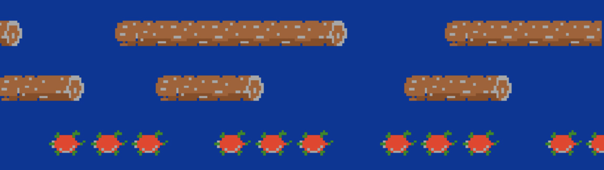

Frogger Game Clone
A Brief Background on Frogger
Frogger, originally released in 1981 by Konami, is one of the most iconic arcade games of all time. The objective is simple yet challenging: guide a frog across a busy road and a hazardous river to reach safety at the top of the screen. Known for its fast-paced gameplay and simple controls, Frogger remains a beloved classic and a great choice for beginner game developers.
Why Frogger is a Great Beginner Project
Frogger is an excellent starting point for learning game development because it introduces fundamental concepts while remaining approachable for beginners. Unlike Pong, which focuses on ball physics and collision detection, Frogger involves managing multiple moving objects, player-controlled movement, and level progression. Some of the key reasons Frogger makes a great beginner project include:
- Grid-based movement - A structured way to move the player across the screen.
- Collision detection - Checking more complex interactions between the frog, obstacles, and hazards.
- Pattern-based enemy behavior - Vehicles and logs follow predictable movement patterns.
- Simple game logic - The game has clear win and loss conditions.
- Increasing difficulty - The game naturally allows for scaling challenge by adjusting speed or obstacles.
Key Concepts You Will Learn
Developing Frogger in Pygame will introduce you to essential game development techniques, including:
- The Pygame Framework - Setting up the game window, handling input, and rendering graphics.
- Object-Oriented Programming (OOP) - Structuring code with classes for game objects like the player, vehicles, and logs.
- Collision Detection and Game Logic - Determining when the frog reaches safety or encounters an obstacle.
- Sprite and Object Management - Handling multiple moving objects efficiently.
- Frame-Based Animation - Making the game world feel dynamic and responsive.
Final Thoughts
Building Frogger in Pygame provides an engaging way to learn the fundamentals of game development while working on a project with clear goals and mechanics. By the end of this project, you'll have a deeper understanding of game loops, object management, and collision detection—critical skills for any aspiring game developer.